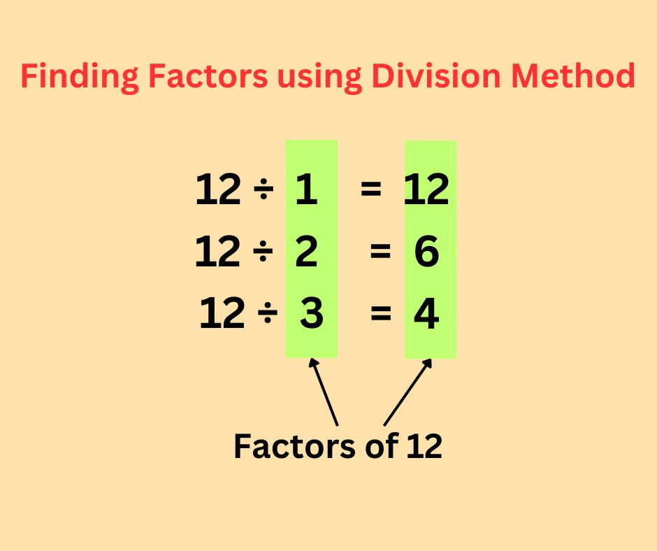

Factors
Factors are numbers that can divide another number without leaving a remainder. In simpler terms, if one number (the divisor) can evenly divide another number (the dividend), then the divisor is considered a factor of the dividend. Every number has at least two factors: 1 and itself.
For example, in the case of the number 24, both 4 and 6 are factors because they divide 24 evenly, resulting in a quotient with no remainder. Thus, 24 has factors of 1, 24, 4, and 6, in addition to 2, 3, 8, and 12, all of which also evenly divide 24.
Prime numbers, on the other hand, have only two factors: 1 and the number itself. For instance, 2 is a prime number because it can only be divided by 1 and 2.
Factors of a Number Properties
These are some of the key properties of the factors of a number:
- Zero cannot be a factor of any number as division by 0 is not defined.
- 1 is a factor of every number.
- Every number has at least 2 factors, 1 and the number itself
- A factor can be negative.
- A factor of a number is always smaller than or equal to the number.
- 1 is the smallest factor of a number and the number itself is the greatest factor of the number.
- A factor of a number can never be a decimal or a fraction.
- 2 is a factor of every even number.
- 5 is a factor of every number that has 5 or 0 in its unit place.
Multiples:
Multiples of a number are the products of that number and other natural numbers. You can often find multiples by examining a multiplication table. Here are examples of multiples for various numbers:
Multiples of 2: 2, 4, 6, 8, 10, 12, 14, 16, 18, 20, and so on. Multiples of 2 are even numbers and end with digits 0, 2, 4, 6, or 8.
Multiples of 3: 3, 6, 9, 12, 15, 18, 21, and so on.
Multiples of 5: 5, 10, 15, 20, 25, and so on. Every multiple of 5 ends with either 0 or 5.
In essence, multiples are the results of multiplying a specific number by various other numbers.
Key differences b/w factors and multiples:
Relationship b/w Factors and Multiples:
Factors and multiples are related to each other. A factor of a number is the number that divides it completely without leaving any remainder. For any given number we can represent it as p × q = z. Here we say z is a multiple of p and q. According to the definition of factors and multiples, p and q are factors of z, because z is divisible by p as well as q. For example, 6 × 2 = 12, so 6 and 2 are the factors of 12, and 12 is a multiple of 6 and 2.
How to Find Factors of a Number?
We can find all the factors of a given number in the following two ways:
- Multiplication method
- Division Method
- Factor Tree Method
Finding Factors Using Multiplication Method
In this method, we have to find all the pairs of whole numbers whose product equals the given number. Let us consider an example to understand that better.
Example: Find all the factors of 24 using the multiplication method.
Solution:
We have to find all the pairs of whole numbers whose product is 12, like
- 1 × 24 = 24
- 2 × 12 = 24
- 3 × 8 = 24
- 4 × 6 = 24
(1, 24) , (2, 12), (3, 8) and (4, 6)
Hence, all these numbers 1, 2, 3, 4, 6, 8, 12 and 24 are factors of 24.
Finding Factors Using Division Method
In this method, we have to find all the divisors of the given number which are exactly divisible by it. Here we start dividing the given number by 1 and continue dividing it by the next number until we reach the square root of that number (or until we reach the number itself).
If the number exactly divides the original number then it is a factor else not. Let us consider an example to understand that better.
Example: Find all the factors of 12 using the division method.
Solution:
We will take every natural number less than 12 and will check whether it is divisible by 12 or not
We will take every natural number less than 12 and will check whether it is divisible by 12 or not
12 ÷ 1 = 12 (remainder = 0)
12 ÷ 2 = 6 (remainder = 0)
12 ÷ 3 = 4 (remainder = 0)
12 ÷ 4 = 3 (remainder = 0)
12 ÷ 5 = 2 (remainder = 2)
12 ÷ 6 = 2 (remainder = 0)
12 ÷ 7 = 1 (remainder = 5)
12 ÷ 8 = 1 (remainder = 4)
12 ÷ 9 = 1 (remainder = 3)
12 ÷ 10 = 1 (remainder = 2)
12 ÷ 11 = 1 (remainder = 1)
12 ÷ 12 = 1(remainder = 0)

So, the numbers that are exactly divides 12 are 1, 2, 3, 4, 6, and 12. Hence these numbers are the factors of 12.
Prime Factorization by Factor Tree Method
A factor tree is a diagrammatic representation of the prime factors of a number. In this method, we find the factors of a number and then further factorize them until we get all the factors as prime numbers. Here, we consider the given number as the top of a tree and all its factors as its branches.
To find the prime factorization by factor tree method, we follow the below-given steps:
- First, split the given number (which is placed at the top of the tree) into factors.
- Then write down the factor pair as the branches of the tree.
- Again split the composite factors obtained in step 2.
- Repeat steps 2 and 3 until all the factors become prime numbers.
- Lastly, multiply all the prime factors obtained.
How to Find Multiples of a Number?
To find multiples of a number, we simply multiply the given number by another whole number. For example, if we have a number 3, its multiples are numbers like 3, 6, 9, 12, and so on, which are obtained by multiplying 3 by 1, 2, 3, 4, and so on.
We can also find multiples of a number by continuously adding the given integer to itself. For example, to find multiples of 10, we add 10 to itself several times and the obtained multiples 10, 20, 30, 40……